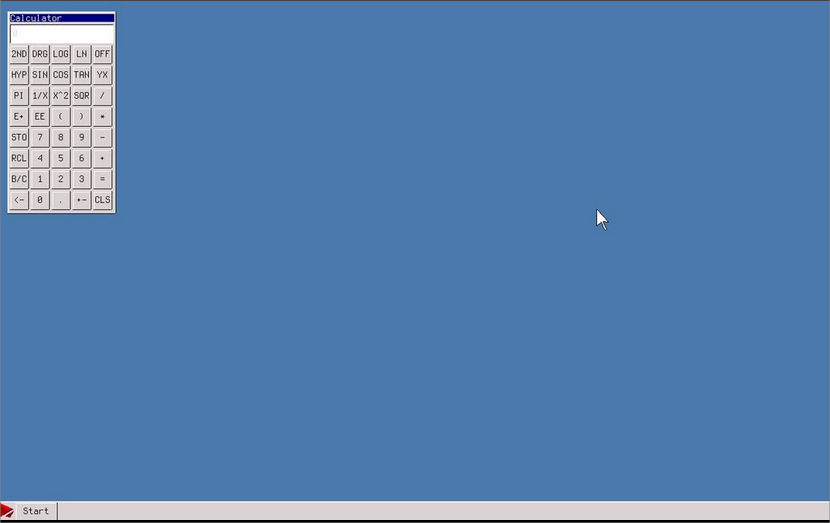
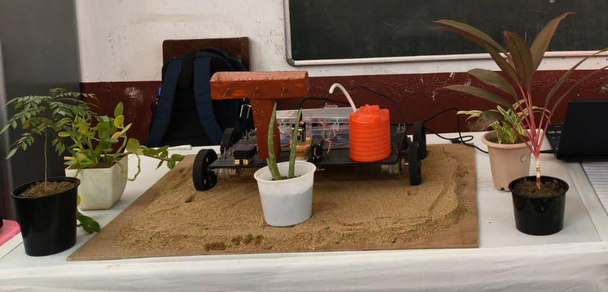
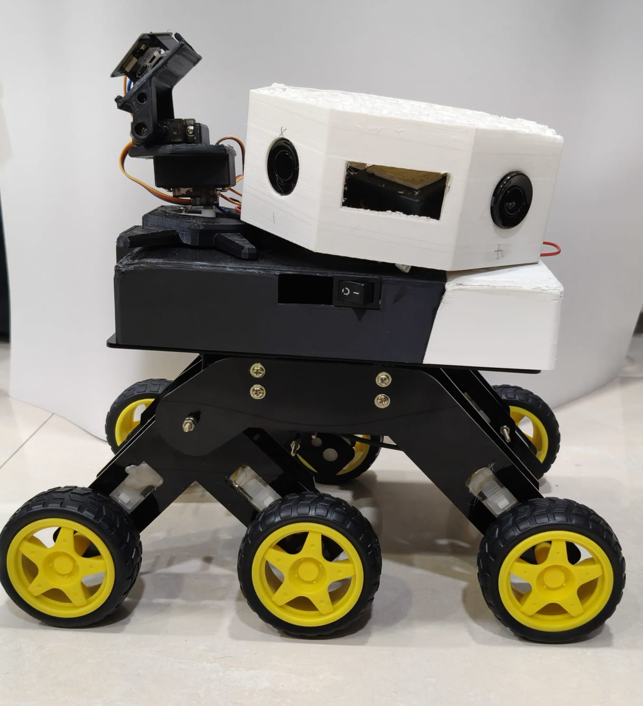

A showcase of things I've built or am currently building.
I tried to make an init system while learning zig and i plan to continue to work on it in the future.
A strict OpenCV face detector built without complex AI models, styled with a cool holographic UI effect.
Framework for inferring root causes in satellite systems experiencing multiple simultaneous degradations.
A modern, fast, and elegantly designed programming language built from scratch.
A fetch utility written in raw x86 Assembly. It worked beautifully until an update broke it and I rage quit.


A rover for automating agriculture. I developed agriAI, a fully offline AI model that identifies plant health via camera and uses a local LLM to diagnose it.

A cultural heritage rover for exploring unreachable archaeological sites. Powered by an offline RAG engine and AI model that identifies artifacts and tells their stories.